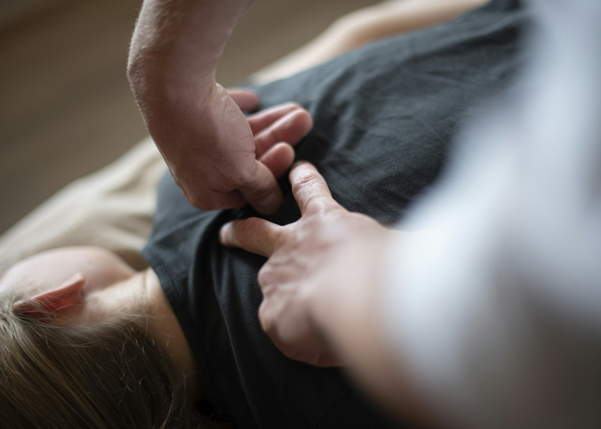

Back and neck pain
Most back and neck pain gets better with the right movement, and quicker with a plan. We find what's driving it, ease it with hands-on treatment, then give you exercises that keep it away.

Sound familiar?
If any of these fit, a first visit is worth it.
- Pain low in your back after lifting, gardening or a long drive
- A stiff neck that won't turn fully, especially in the morning
- Pain, tingling or numbness running down one leg
- An ache that builds through the working day at a desk
How treatment usually goes
Everyone's different, but this is the usual shape of it.
- First visit
Find the cause
We ask how it started, watch how you move and test what makes it worse. You leave knowing what's going on and what to do tonight.
- Weeks 1 to 3
Settle the pain
Hands-on treatment, gentle exercises and changes to how you sit and sleep. Most people feel a clear difference by the third visit.
- Weeks 4 to 8
Build it back up
Strength work for your back and hips so it holds up to the things you do every day.
- After that
Keep it away
A short home program and a check-in when you need one. No open-ended courses of treatment.
One to start with: knee rocks
- Lie on your back with your knees bent and feet flat.
- Let both knees fall slowly to one side, as far as is comfortable.
- Bring them back through the middle and over to the other side.
- Keep your shoulders on the floor and breathe out as you go.
Stop if it sends pain down your leg, and mention it at your visit.
Other things we treat
Book a first visit
$40 with ACC, $110 without. Times from 7am on weekdays.